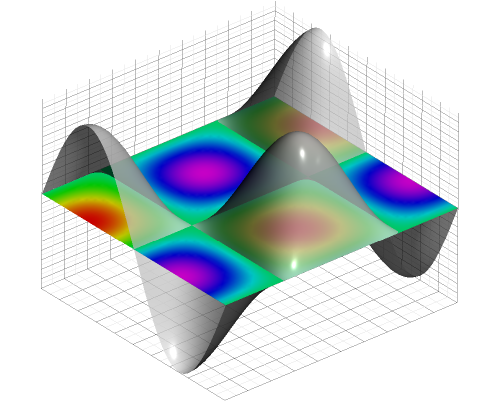

In .png format:
In .svg format:
Eps files can be embeded into webpages after conversion to svg.
To embed pdf files:
To view the image in a new tab, the HTML for the image has been provided as the link:
For the interactive image click here
To show the 3D interactive image embedded in the webpage using iframe tag:
Image and code credit:
R Markdown Cookbook